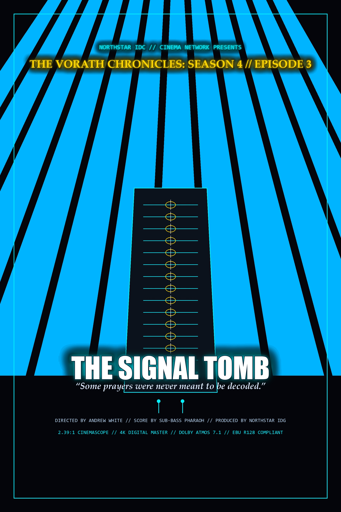

Deep beneath the Glacial Rift of Sector 9, the Imperial excavation unit unearths the primordial Signal Tomb—an ancient crystalline vault transmitting pre-collapse algorithmic prayers into the deep void. As the deciphering sequence initiates, the boundaries between transmission and observer collapse.